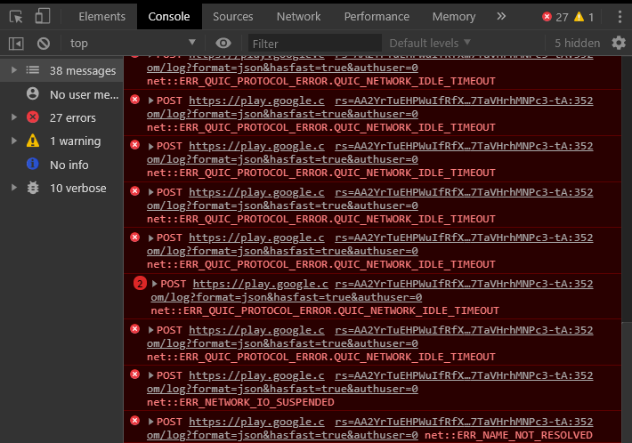
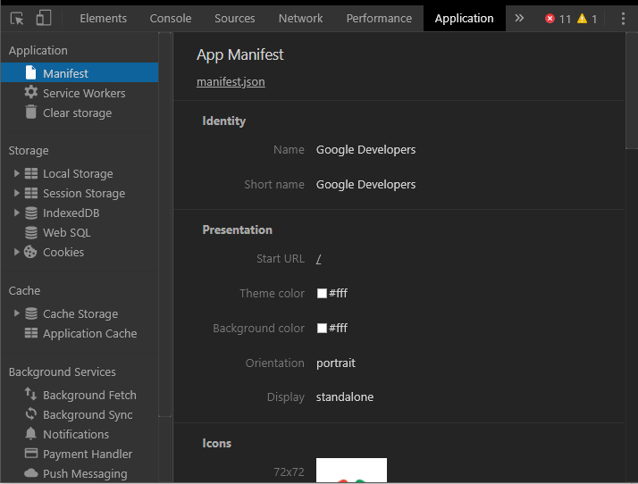

Membuka Chrome DevTool
- Pilih More Tools > Developer Tools dari Menu Chrome.
- Klik-kanan pada elemen laman dan pilih Inspect
- Gunakan pintasan keyboard Ctrl+Shift+I (Windows) atau Cmd+Opt+I (Mac)
Menemukan Panel
Device Mode
Gunakan Device Mode untuk membangun pengalaman web yang sangat responsif dan berorientasi seluler.
- Device Mode
- Uji Tampilan yang Terlihat dan Khusus-Perangkat yang Responsif
- Mengemulasikan Sensor: Geolokasi & Akselerometer
Elements
Gunakan panel Elements untuk mengulang pada layout dan desain situs Anda dengan memanipulasi DOM dan CSS secara bebas.
Console
Gunakan Console untuk merekam informasi diagnostik ke dalam log selama development atau gunakan sebagai shell untuk berinteraksi dengan JavaScript di laman.
Sources
Debug JavaScript menggunakan breakpoint di panel Sources atau hubungkan file lokal melalui Workspaces untuk menggunakan editor langsung DevTools.
Network
Gunakan panel Network untuk mendapatkan wawasan mengenai sumber daya yang diminta dan diunduh serta optimalkan kinerja pemuatan laman.
Timeline

Gunakan Timeline untuk meningkatkan kinerja waktu proses laman dengan merekam dan mempelajari beragam kejadian yang terjadi selama daur hidup situs.
Profiles

Gunakan panel Profiles jika Anda memerlukan lebih banyak informasi daripada yang disediakan oleh Timeline, misalnya untuk melacak kebocoran memori.
Application
Gunakan panel Resources untuk memeriksa semua sumber daya yang telah dimuat, termasuk database IndexedDB atau Web SQL, storage sesi dan lokal, cookie, Cache Aplikasi, gambar, font, dan stylesheet.
Security
Gunakan panel Security untuk men-debug masalah materi campuran, masalah pada sertifikat, dan sebagainya.